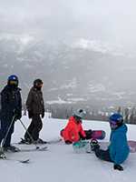
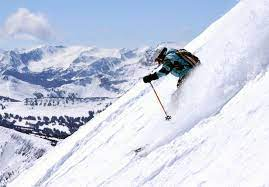
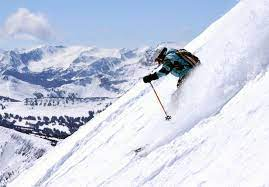

Chloe Kim's return

Will the 2022 Winter Olympics remain in China?

Hi! My name is Courtney Gerard and I am a student at Syracuse University studying Communications Desgin. I learned to ski when I was 7 years old and since then, I have been to mountains in Utah, Colorado, California, and my personal favorite, Montana. When I was 15 I decided to try snowboarding. My life changed after that day. Snowboarding is my passion. I not only fell in love with the sport but I fell in love with the mountains.



 
